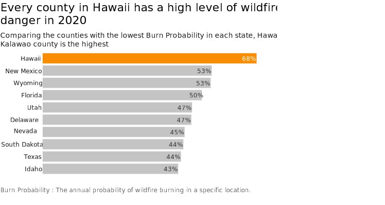

Extreme weather events all over the world is occurred many parts of the world. Hawaii is not an exception. Drought condition is particularly severe this year, according to the Hawaii Department of Land and Natural Resources. Arid weather not only affects human activity and crops, but also increases the risk of wildfires.
Compared to the states on the West Coast, such as California, which are prone to large wildfires, Hawaii is blessed with a humid subtropical climate. There is little impression of a high risk of wildfires. Yet, data show that Hawaii is at high risk for wildfires across its entire territory.

According to the the US Department of Agriculture's dataset, which evaluate the statewide wildfire risk, when the counties with the lowest values in the Burn Probability (the annual probability of wildfire burning in a specific location) within nation for each county are compared state by state, Hawaii’s county with the lowest Burn Probability has the highest risk.
Each year, about 0.5% of Hawaii's total land area burns, which is equal to or greater than the proportion burned of any other US state, according to the Hawaii Wildfire Management Organization. Although Hawaii is famous for active volcanos, which sometimes cause wildfire by eruption, over 98% of wildfires are said to be human caused.
It is clear from the map that, with the exception of Kalawao, Hawaii's counties are separated by islands. Because they are separated by oceans, wildfires should be unlikely to spread beyond the counties. Why, then, is the risk of wildfire so high in every county in the state of Hawaii?
One reason is the disappearance of pineapple and sugarcane plantations in the 1960s, when Hawaii became increasingly dependent on tourism rather than agriculture. Unabandoned farmland is covered with non-native grasses that are highly flammable, which made the Islands vulnerable to wildfire.
Climate change is also contributing to the increase in wildfires in Hawaii, experts say. Rising sea surface temperatures in Hawaii cause more storms during the Winter, and the rainfall brought by the storms results in an increase in flammable vegetation.
Source: This fire risk dataset comes from Department of Agriculture.